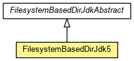

org.waarp.common.file.filesystembased.specific
Class FilesystemBasedDirJdk5
java.lang.Object
 org.waarp.common.file.filesystembased.specific.FilesystemBasedDirJdkAbstract
org.waarp.common.file.filesystembased.specific.FilesystemBasedDirJdk5
org.waarp.common.file.filesystembased.specific.FilesystemBasedDirJdkAbstract
org.waarp.common.file.filesystembased.specific.FilesystemBasedDirJdk5
public class FilesystemBasedDirJdk5
- extends FilesystemBasedDirJdkAbstract

JDK5 version of specific functions for Filesystem.
Note: this class depends on Apache commons Io.
- Author:
- Frederic Bregier
| Methods inherited from class java.lang.Object |
clone, equals, finalize, getClass, hashCode, notify, notifyAll, toString, wait, wait, wait |
FilesystemBasedDirJdk5
public FilesystemBasedDirJdk5()
canExecute
public boolean canExecute(File file)
- Description copied from class:
FilesystemBasedDirJdkAbstract
- Result of ls on FileInterface
- Specified by:
canExecute in class FilesystemBasedDirJdkAbstract
- Parameters:
file -
- Returns:
- True if the file is executable
getFreeSpace
public long getFreeSpace(File directory)
- Specified by:
getFreeSpace in class FilesystemBasedDirJdkAbstract
- Parameters:
directory -
- Returns:
- the free space of the given Directory
Copyright © 2009-2012 Waarp. All Rights Reserved.